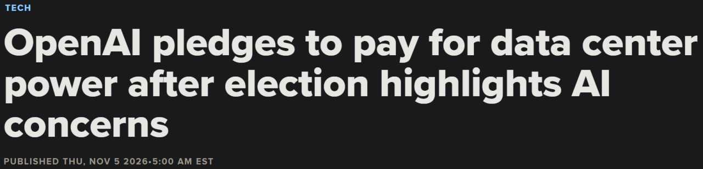
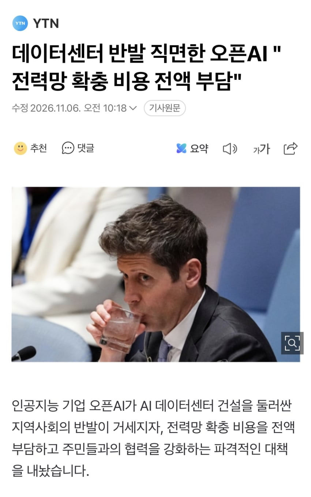
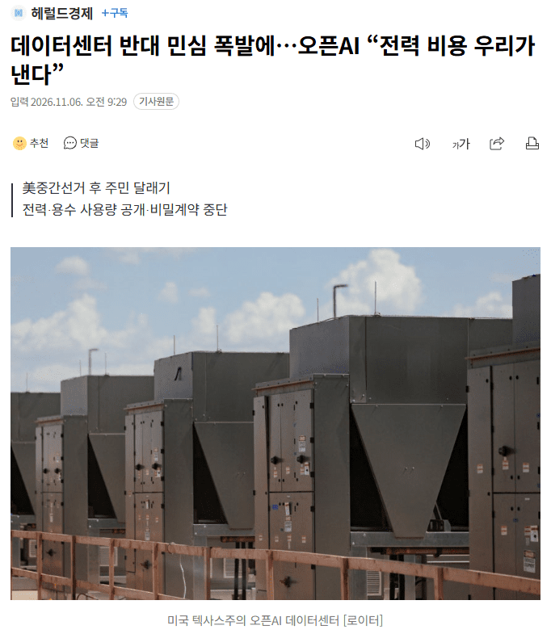

- 데이터센터 반대 민심 폭발에…오픈AI “전력 비용 우리가 낸다”

미국에서 인공지능(AI) 데이터센터 건설에 대한 지역사회의 반발이 확산하자 챗GPT 개발사 오픈AI가 전력망 확충 비용을 직접 부담하고 주민들에게 건설 계획과 전력·용수 사용량을 공개하는 등 대응책을 내놨다. 최근 미국 중간선거에서 데이터센터 건설 규제 강화를 공약한 후보들이 잇따라 승리하면서 지역사회의 우려를 해소하고 신뢰를 확보하기 위한 움직임으로 풀이된다.
5일(현지시간) 미 일간 뉴욕타임스(NYT) 등에 따르면 오픈AI는 이날 발표한 ‘전국 지역사회 협약’(National Community Compact)을 통해 앞으로 자사가 소유·운영하는 데이터센터에서 사용하는 전력 비용과 전력 공급에 필요한 전력망 구축·개선 비용을 전액 부담하겠다고 밝혔다.
이는 대규모 데이터센터 건설로 전력 수요가 급증하면서 지역 주민들의 전기요금까지 오를 수 있다는 우려에 대응하기 위한 조치다.
오픈AI는 데이터센터 건설 프로젝트가 지연되거나 축소·취소되더라도 지역사회와 다른 전력 소비자들이 전력망 확충 비용을 떠안지 않도록 사전에 재정적 보증도 제공하기로 했다.
아울러 각 사업장의 용수 및 전력 사용량을 공개하고, 공직자들에게 비밀 유지 계약 체결을 요구하는 관행도 중단하겠다고 밝혔다.
오픈AI는 데이터센터 건설 시 지역 공직자들에게 사업 관련 정보를 외부에 공개하지 못하도록 하는 비밀 유지 계약을 요구해왔는데, 이는 오픈AI가 주민들의 감시를 피해 사업을 추진하려 한다는 의혹을 불러일으킨 바 있다.
오픈AI는 또 데이터센터가 들어서는 각 지역에서 자체적인 지역 협약을 마련하고, 매년 공개 보고서를 발행하겠다고 밝혔다.
다만, 이러한 약속은 오픈AI가 직접 소유·운영하는 사업장에만 적용된다.
현재 오픈AI의 컴퓨팅 인프라 상당 부분은 오라클과 같은 협력사들이 소유하고 있어 실제 적용 범위에는 한계가 있다.
오픈AI는 나아가 빅테크 업계 전반에도 이와 유사한 규정을 도입해야 한다고 주장했다.
이날 발표한 ‘정책 청사진’에서 AI 기업 등 대규모 전력 사용자들이 전력망 개선 과정에서 추가로 발생하는 비용을 부담하도록 규제해야 한다고 제안했다.
정부에는 빅테크 기업에 제공하는 세제 혜택을 공개하고, 기업들이 약속한 조건을 이행하지 못하면 혜택을 환수하도록 촉구했다.
자체적인 지역사회 협력 강화에 그치지 않고 데이터센터 건설에 따른 비용 부담과 정보 공개를 업계 전반의 의무로 확대하자고 제안한 것이다.
이러한 움직임은 지난 3일 미국 중간선거에서 민주당이 압승을 거둔 직후 나왔다.
민주당은 텍사스·조지아·오하이오 주지사 선거에서 신규 데이터센터 건설 허가를 일시 중단하고 건설 규제를 강화하겠다고 공약한 후보들을 앞세워 승리했다.
미국 각지에서 데이터센터 건설을 제한하려는 주민투표 안건들이 유권자들의 폭넓은 지지를 얻은 것도 업계에 부담으로 작용하고 있다.
NYT는 데이터센터 건설에 대한 지역사회의 반발을 대수롭지 않게 여겨온 도널드 트럼프 미국 대통령과 긴밀한 관계를 유지해온 오픈AI가 난처한 상황에 놓였다고 짚었다.
앞서 샘 올트먼 오픈AI 최고경영자(CEO)는 트럼프 대통령 취임위원회에 100만달러(약 14억원)를 기부했고, 그레그 브록먼 오픈AI 사장도 지난해 친트럼프 슈퍼팩(super PAC·정치활동위원회)에 2500만달러(약 350억원)를 기부한 바 있다.
다만, 브록먼 사장은 올해 예정했던 추가 기부는 철회했다.
https://n.news.naver.com/mnews/article/016/0002719725?rc=N&ntype=RANKING&sid=001

댓글
수집 당시 댓글 128개
ㅇㅇ · 11.05 21:02:58
ㅇㅇ · 11.05 21:05:35
ㅇㅇ · 11.05 21:11:44
ㅇㅇ5 · 11.05 21:26:47
· ㅇㅇ · 11.05 22:41:46
나키리 · 11.05 21:36:45
· 모가모가 · 11.05 21:49:28
· 나키리 · 11.05 21:57:31
nyasper · 11.05 21:43:08
Vooqqqqld · 11.05 21:48:52
보글헤드 · 11.05 21:49:16
ㅇㅇ6 · 11.05 21:50:07
ㅇㅇ7 · 11.05 21:51:21
S＆P500 · 11.05 21:51:33
· 프리만두맨 · 11.05 21:54:17
· S＆P500 · 11.05 21:56:33
· ㅇㅇ · 11.05 22:09:56
· S＆P500 · 11.05 22:10:32
· ㅇㅇ · 11.05 22:11:13
· S＆P500 · 11.05 22:12:49
ㅇㅇ · 11.05 22:04:18
ㅇㅇ9 · 11.05 23:29:38
땨뗘(봇) · 11.06 22:35:05
3dd · 11.06 22:35:22
ㅇㅇ · 11.06 22:36:06
· 헤이룽 · 11.06 22:37:32
ㅇㅇ · 11.06 22:37:17
ㅇㅇ · 11.06 22:38:12
ㅇㅇ · 11.06 22:38:19
ㅇㅇ · 11.06 22:38:21
· ㅇㅇ · 11.06 22:38:27
· ㅇㅇ · 11.06 22:40:31
ㅇㅇ · 11.06 22:39:19
ㅇㅇ · 11.06 22:39:30
· ㅇㅇ · 11.06 22:43:12
· ㅇㅇ · 11.06 22:43:19
ㅇㅇ · 11.06 22:39:36
ㅇㅇ · 11.06 22:39:43
ㅇㅇ · 11.06 22:40:07
데센징
정상화
ㅇㅇ · 11.06 22:40:19
· ㅇㅇ · 11.06 22:41:13
· ㅇㅇ · 11.06 22:41:29
· ㅇㅇ · 11.06 23:11:27
· ㅇㅇ · 11.06 23:11:31
· ㅇㅇ · 11.06 23:11:34
· ㅇㅇ · 11.06 23:11:39
ㅇㅇ · 11.06 22:40:19
· ㅇㅇ · 11.06 22:41:24
ㅇㅇ · 11.06 22:40:44
· ㅇㅇ · 11.06 22:40:48
· ㅇㅇ · 11.06 22:41:02
ㅇㅇ · 11.06 22:41:04
· ㅇㅇ · 11.06 22:41:13
ㅇㅇ · 11.06 22:41:11
· ㅇㅇ · 11.06 22:41:42
· 소설쟁이 · 11.06 22:44:41
· ㅇㅇ · 11.06 22:47:54
· ㅇㅇ · 11.06 22:56:04
ㅇㅇ · 11.06 22:42:42
ㅇㅇ · 11.06 22:42:44
ㅇㅇ · 11.06 22:42:49
ㅇㅇ · 11.06 22:42:59
존갤러 · 11.06 22:43:17
뭐? 후장오픈ai알몸도게자? 어흐💩
NickWilde · 11.06 22:44:24
· ㅇㅇ · 11.06 22:45:42
· ㅇㅇ · 11.06 22:54:11
ㅇㅇ · 11.06 22:44:36
ㅇㅇ · 11.06 22:44:57
ㅇㅇ · 11.06 22:44:57
ㅇㅇ · 11.06 22:45:15
ㅇㅇ · 11.06 22:45:23
· ㅇㅇ · 11.06 22:45:30
ㅇㅇ · 11.06 22:45:30
ㅇㅇ · 11.06 22:45:31
ㅇㅇ · 11.06 22:46:22
ㅇㅇ · 11.06 22:46:48
ㅇㅇ · 11.06 22:47:13
ㅇㅇ · 11.06 22:47:24
ㅇㅇ · 11.06 22:47:39
ㅇㅇ · 11.06 22:47:45
ㅇㅇ · 11.06 22:49:06
pole4 · 11.06 22:49:29
ㅇㅇ · 11.06 22:49:37
· ㅇㅇ · 11.06 22:49:43
ㅇㅇ · 11.06 22:51:29
ㅇㅇ · 11.06 22:51:30
ㅇㅇ · 11.06 22:53:13
ㅇㅇ · 11.06 22:53:13
ㅇㅇ · 11.06 22:54:35
ㅇㅇ · 11.06 22:55:31
· ㅇㅇ · 11.06 22:55:38
ㅇㅇ · 11.06 22:56:52
· ㅇㅇ · 11.06 22:57:04
· ㅇㅇ · 11.06 23:10:08
· ㅇㅇ · 11.06 23:11:09
ㅇㅇ · 11.06 23:10:21
ㅇㅇ · 11.06 23:10:29
· ㅇㅇ · 11.06 23:11:24
ㅇㅇ · 11.06 23:11:31
ㅇㅇ · 11.06 23:12:10
ㅇㅇ · 11.05 20:22:19
· ㅇㅇ · 11.05 20:23:54
추세추종 · 11.05 20:22:20
ㅇㅇ · 11.05 20:22:28
ㅇㅇ · 11.05 20:22:30
· ㅇㅇ · 11.05 20:22:51
· ㅇㅇ · 11.05 20:24:06
· ㅇㅇ · 11.05 21:53:30
· ㅇㅇ8 · 11.05 22:01:12
ㅇㅇ · 11.05 20:22:35
ㅇㅇ1 · 11.05 20:22:39
WinterisComing · 11.05 20:22:50
묵구재비 · 11.05 20:22:57
· 프리만두맨 · 11.05 21:52:49
ㅇㅇ2 · 11.05 20:23:02
ㅇㅇ · 11.05 20:23:03
ㅇㅇ3 · 11.05 20:23:13
ㅇㅇ · 11.05 20:24:36
ㅇㅇ · 11.05 20:24:41
순컴 · 11.05 20:25:05
ㅇㅇ · 11.05 20:26:18
· ㅇㅇ · 11.05 22:05:40
ㅇㅇ · 11.05 20:56:22
ㅇㅇ2 · 11.05 20:56:48
호모루덴스 · 11.05 20:58:43
ㅇㅇ4 · 11.05 20:59:22
ㅇㅇ · 11.05 20:59:37
야쿠르트스왈로즈 · 11.05 21:01:10